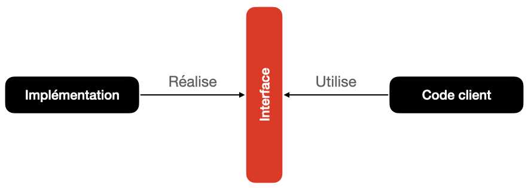

Python possède dans la bibliothèque standard un grand nombre de structures de données, programmées de manière efficace.
Rappels : modules, fonctions
Pour chaque module, on distingue :
-
sa réalisation (ou implémentation) : c’est le code lui-même.
-
son interface (API) : c’est l’énumération des fonctions définies dans le module qui sont utilisées depuis d’autres modules/programmes, les clients.
-
L’interface doit présenter une documentation dans laquelle tout ce que doit savoir le client doit être indiqué.
-
L’objectif de l’interface est que le client n’ait pas à consulter l’implémentation pour utiliser les fonctions.
Pour chaque fonction du module, la spécification doit indiquer :
- son nom.
- la liste de ses paramètres accompagnés de leur type.
- le type de la valeur retournée.
- la documentation de la fonction.
Avantages d’une barrière d’abstraction
- Séparation du programme en deux composantes : Implémentation et code client. 
- La barrière d’abstraction permet de faire varier l’implémentation sans impacter le client.
- La barrière d’abstraction permet de cacher (encapsuler) le code de l’implémentation.
Pourquoi différentes structures de données ?
Les structures de données organisent différemment les données que le programme traite. Le langage Python fournissant le type list, on pourrait se demander pourquoi ne pas systématiquement l’utiliser et pourquoi devoir apprendre de nouveaux types.
En fait, la spécialisation des structures de données rend la programmation plus simple (utilisation de l’API) et plus efficace (complexité).
Un même type peut être implémenté de différentes façons. Dans tous les cas, il présente la même interface au programmeur (API).
On parle donc de type abstrait.
Principaux types abstraits fournis avec le langage Python
Liste : list
Le type list de Python n’est pas implémeté à l’aide de listes chaînées (que nous étudierons au chapitre 7), car la suppression ou l’ajout ailleurs qu’en fin de liste nécessite de décaler les valeurs de fin de liste, et n’est donc pas réalisé en temps constant. D’autre part, l’accès à un élément quelconque est réalisé en temps constant, ce qui n’est pas le cas avec une liste chaînée.
Le type list de Python est implémenté à l’aide de tableaux dynamiques.
Tableau associatif : dict
Le type dict de Python est une implémentation du type abstrait tableau associatif. L’implémentation correspond à une table de hachage, ce qui signifie que la valeur est stockée dans un tableau et que la position dans ce tableau dépend du résultat d’une fonction de hachage appliquée à la clé. En un temps indépendant du nombre de valeurs stockées dans le dictionnaire, Python peut retrouver la valeur associée à n’importe quelle clé : pour cela il calcule un indice à partir de la valeur de la clé (qui doit donc être hachable, c’est-à-dire récursivement non mutable) et récupère la valeur stockée à cet indice dans un tableau.
Une caractéristique essentielle des dictionnaires est que la récupération d’une valeur associée à une clé se fait en un temps constant, indépendant de la taille du dictionnaire. De même, savoir si une clé fait partie du dictionnaire prend un temps constant (alors que vérifier si un élément est dans une liste prend un temps proportionnel à la taille de la liste).
Ensemble : set
Un ensemble Python (set) est équivalent à un dictionnaire ne contenant que des clés. Par construction, chaque élément est donc unique. De plus, avec le type set on dispose déjà des opérations ensemblistes habituelles, implémentées de manière très efficace : union, intersection, différence, etc.
Opérations usuelles et complexité en temps
Opérations sur les listes
| Type Python | Type abstrait | Opération | Exemple | Complexité |
|---|---|---|---|---|
list |
Tableau dynamique | Ajout à la fin | lst.append(x) |
$O(1)$ |
lst=[] |
Accès à un élément | lst[i] |
$O(1)$ | |
len(lst) |
Modification d’un élément | lst[i] = x |
$O(1)$ | |
| Effacement d’un élément | del lst[i] |
$O(n)$ | ||
| Insertion d’un élément | lst.insert(i, x) |
$O(n)$ | ||
| Recherche d’un élément | x in lst |
$O(n)$ |
Opérations sur les dictionnaires
| Type Python | Type abstrait | Opération | Exemple | Complexité |
|---|---|---|---|---|
dict |
Tableau associatif | Ajout d’un élément | d[key] = val |
$O(1)$ |
d={} |
Modification d’un élément | d[key] = val |
$O(1)$ | |
len(d) |
Effacement d’un élément | del d[key] |
$O(1)$ | |
| Accès à un élément | d[key] |
$O(1)$ | ||
| Recherche d’une clé | key in d |
$O(1)$ | ||
| Recherche d’une valeur | val in d.values() |
$O(n)$ |
Opérations sur les ensembles
| Type Python | Type abstrait | Opération | Exemple | Complexité |
|---|---|---|---|---|
set |
Ensemble | Ajout d’un élément | s.add(elt) |
$O(1)$ |
s = {} |
Retrait d’un élément | s.remove(elt) |
$O(1)$ | |
len(s) |
Test d’appartenance | elt in s |
$O(1)$ | |
| Union | s | t |
$O(n + m)$ | ||
| Intersection | s & t |
$O(min(n, m))$ | ||
| Différence | s - t |
$O(n)$ | ||
| Différence symétrique | s ^ t |
$O(n)$ |
Exemple : Définition et implémentation du type abstrait Tableau_dynamique en Python
Interface du type abstrait Tableau_dynamique
L’interface de la classe est la suivante :
|
|
Implémentation
- Créer la classe
TableauDynamique. - Dans la méthode
__init__, initialiser trois attributs privés_nbre,_capaciteet_tabtels que_nbredonne le nombre d’éléments dans le tableau (initialement égal à 0),_capacitedonne le nombre maximal possible d’éléments dans le tableau (initialement égal à 1) et_tabréférence un tableau créé à l’aide de la fonctionpy_objectdu modulectypes.
Remarque : le code de création du tableau est le suivant :
|
|
- Définir la méthode
__len__dont la spécification est :
|
|
- Définir la méthode
__getitem__dont la spécification est :
|
|
- Définir la méthode privée
_augmente_tailledont la spécification est :
|
|
- Définir la méthode
appenddont la spécification est :
|
|
Remarque : La méthode append doit appeler la méthode _augmente_taille.
- Définir la méthode
__repr__dont la spécification est :
|
|
- Tester le bon fonctionnement de la classe.